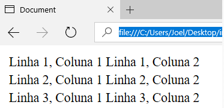

Tabelas são elementos utilizados com frequência para exibir dados de forma organizada em linhas e colunas. No HTML, elas são formadas por três tags básicas: table, para delimitar a tabela; tr, para indicar as linhas; e td para formar as colunas. A Listagem 7 mostra um exemplo simples de tabela com três linhas e duas colunas, e seu resultado pode ser visto na Figura 4.

Resultado:
Existem ainda outras três tags utilizadas para delimitar, de forma mais organizada, as partes da tabela: thead para o cabeçalho; tbody para o corpo; e tfoot para o rodapé. A Listagem 8 traz um exemplo de tabela mais complexa, utilizando todas as tags. Seu resultado é apresentado na Figura 5.
Listagem 1:
Resultado: